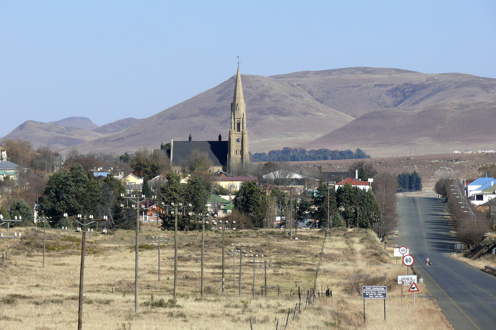

Over Dordrecht
Dordrecht, ons eiland… Bijna iedereen roept bij het horen van het woord Dordrecht: ‘Hoe dichter bij Dordt, hoe rotter het wordt.’ Wij weten allemaal ook wel dat dat niet zo is, maar hoe veel weet jij eigenlijk over Dordrecht? Op deze pagina vind je feiten, cijfers en weetjes. Praktisch of grappig. Veel plezier!
Over Dordrecht in Zuid-Afrika
Dordtenaren die op weeronline willen kijken hoe warm het is, zullen het wel weten. Ze moeten kiezen tussen Dordt in Nederland of in Zuid-Afrika. Sinds 2006 bestaat er een officiële stedenband. Het doel is om de bewoners van de beide Dordrechten met elkaar in contact te brengen, van elkaar te leren en elkaar zo mogelijk te ondersteunen.
